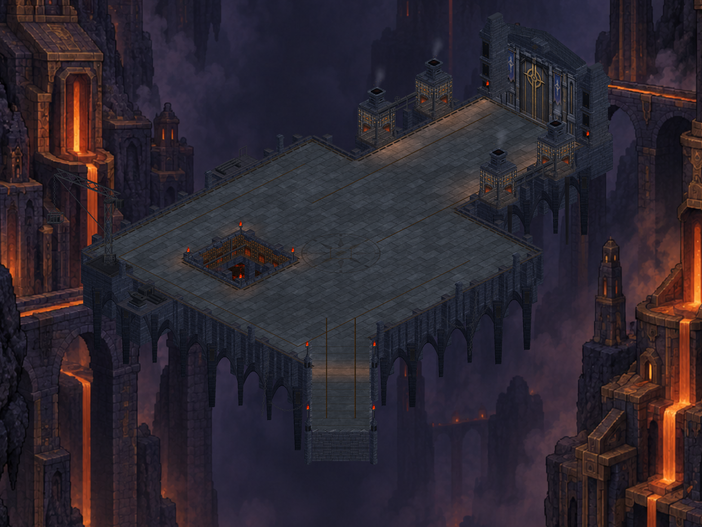
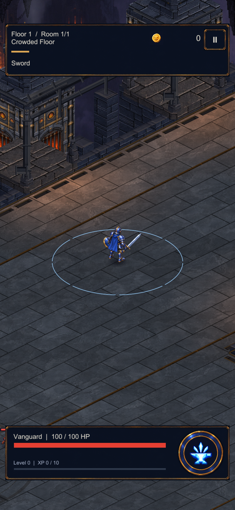

Birleşik görsel kontrol
Baca kuşaklarının yüzeye oturması, örsün çelik yüzeyi ve dikey kadrajın doğrulanması. Önceki ışık, kurum ve atölye çalışmaları bu pakette birleşiyor.

Dikey oyun görünümü
Görüntü alma aracının katman sırası düzeltildi. Bu bir oyun HUD değişikliği değildir.

Üretim ve doğrulama kaydı